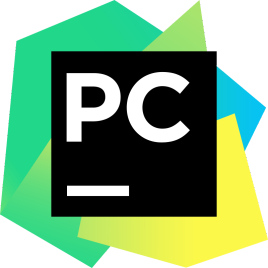
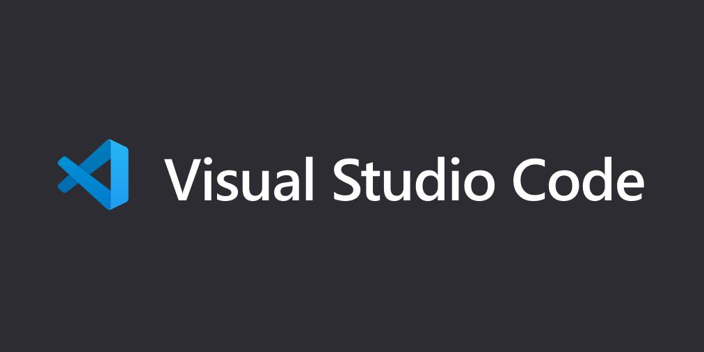

Pycharm
|  |
PyCharm是一种Python IDE，带有一整套可以帮助用户在使用Python语言开发时提高其效率的工具，比如调试、语法高亮、Project管理、代码跳转、智能提示、自动完成、单元测试、版本控制。此外，该IDE提供了一些高级功能，以用于支持Django框架下的专业Web开发。
https://www.jetbrains.com/pycharm/download |
VSCode
|  |
Visual Studio Code（简称“VS Code”）是Microsoft在2015年4月30日Build开发者大会上正式宣布一个运行于 Mac OS X、Windows和 Linux 之上的，针对于编写现代Web和云应用的跨平台源代码编辑器，可在桌面上运行，并且可用于Windows，macOS和Linux。它具有对JavaScript，TypeScript和Node.js的内置支持，并具有丰富的其他语言（例如C++，C＃，Java，Python，PHP，Go）和运行时（例如.NET和Unity）扩展的生态系统。
https://code.visualstudio.com/ |